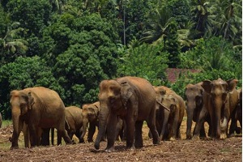

morly旅游网
斯里兰卡的居民与人初次见面，多采用握手、双手合十的方法来打招呼，双手在面部合十是最为规范的做法。斯里兰卡人喜欢红色、白色、黄色等颜色，更视乌鸦为吉祥物，喜欢用燃灯的方式来庆祝开业、奠基、宗教仪式等。 斯里兰卡人的婚俗比较特别，以僧伽罗人的婚俗为代表，男女双方先订亲，确定婚期后，互换戒指，结婚当日，有小舅子为新郎洗脚、系“同心结”、打破椰子等习俗，而真正的礼成是在新娘在结婚礼台上，在腰上围上新郎所送的花布、头上戴上新郎所送的鱼形发卡之后。在斯里兰卡的中部山区还存在着一妻多夫制。 值得注意的是在斯里兰卡，点头和摇头的含义与中国相反，点头是表示不是，摇头则表示是。斯里兰卡人吃饭是用右手的拇指、食指、中指这三根指头拿起食物食用，给当地人送礼物时，不要送花，吃饭和接受礼物时，都要用右手。
下面看看韩国的美景有哪些吧！
班达拉奈克国际会议大厦
班达拉奈克国际会议大厦位于科伦坡贝塔区中心地带，建筑宏伟，精美壮观，是该市标志性建筑之一。大厦是由中国政府无偿援助斯里兰卡的项目，于1973年5月竣工，建成并投入使用30多年来，在斯里兰卡社会生活中发挥着重要作用。后由中国政府援建的纪念西丽玛沃·班达拉奈克展览中心和班达拉奈克国际研究中心分别于2003年1月和4月落成，与大厦构成统一的整体，被誉为“中斯友谊的象征”。
大象孤儿院
大象孤儿院（Elephant Orphanage）坐落在斯里兰卡中央省盖克拉行政区的滨纳瓦纳村（Pinnawela），离首都科伦坡85公里。是一个保护大象的场所，又是旅游胜地。斯里兰卡原始森林中到处可见到被废弃的违禁开采玉石的简易矿井，往往有一些小象掉进这些废井而"坐以待毙"。为收容从玉石矿井中救出和其他因种种不测与母象失散了的幼象，政府野生动物保护局于1975年开始修建了这座世界上独一无二的“象孤儿院”。
阿努拉德普勒
阿努拉德普勒是斯里兰卡最古老的城市，拥有2500年历史，在公元前380年成为斯里兰卡首都，并且在之后的一千年，都是斯里兰卡王权所在地。古皇城的遗址在十九世纪被发现，并且修缮至今。建于在公元前5世纪的阿努拉达普拉被看作佛教之都。
要塞区
要塞区又称城堡区，原来是葡萄牙殖民者建造的要塞，现在是斯里兰卡议会、政府、银行、商店、旅游部门、航空和轮船公司所在地，也是科伦坡市区到周边其他城市的交通枢纽及住宿、餐饮、娱乐、购物的中心场所。 整个要塞区树木苍翠，花卉争艳，风景清幽。街道上到处栽有被称为国树的铁木树和国花睡莲，更多的是直耸云霄的椰子树，还有数以万计的神鸟（斯里兰卡人视乌鸦为“神鸟”）栖息于此。福特区南部的加里广场面对印度洋，是观赏海景的好去处。沿着印度洋海岸一带，街道笔直宽敞，两旁多别墅、豪华公寓、旅馆及殖民地时代保留下来的英国式建筑。广场附近有一座1837年建造的钟楼，原是港口的灯塔，登钟楼可俯瞰科伦坡城全景，是科伦坡的地标性建筑。
内容整理至网络，如有侵权，请联系我们！1255394075@qq.com